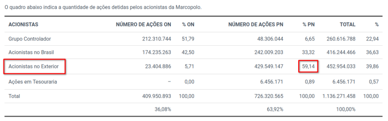
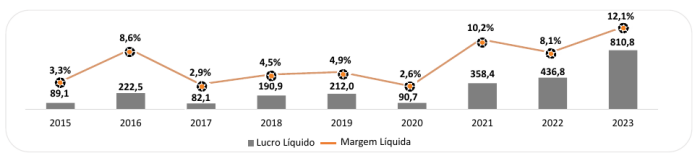
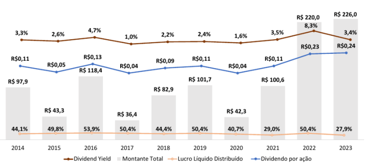
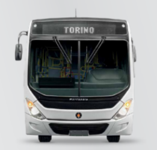
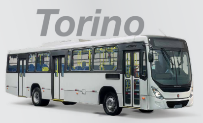
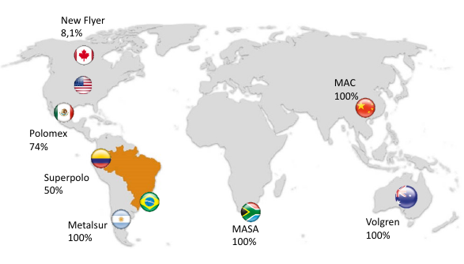
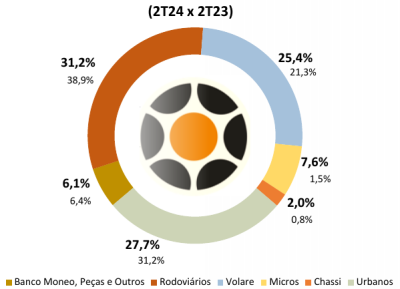

A Marcopolo é uma das minhas queridinhas. É uma empresa gaucha de produção de ônibus e, mais recentemente, também de VLTs.
Comecei a investir na Marcopolo lá atrás em 2021, quando a ação ordinária custava R$ 2,22. Infelizmente na época eu ganhava muito pouco como estágiario e só podia investir por mês algumas poucas dezenas de reais. Era o início da minha aventura aprendendo a investir na bolsa de valores. Mesmo com poucos reais investidos, as ações me deram uma valorização de mais de 180% de lá pra cá.
Fundada em 1949, na cidade de Caxias do Sul, no Rio Grande do Sul, a empresa se destaca pela produção de ônibus urbanos, rodoviários, escolares e veículos de transporte de passageiros especiais, exportando seus produtos para diversos países, com fábricas nos continentes da com fábricas em diferentes continentes, como América Latina, África e Ásia. A Marcopolo atualmente é a maior empresa brasileira do setor, reconhecida por sua inovação tecnológica, design e qualidade.
Tópicos:
Listada na B3 em ações ordinárias (POMO3) e preferenciais (POMO4), suas ações fazem parte do índice SMLL e IBRX. Praticamente 60% dos investidores das ações preferênciais são estrangeiros (63% substraindo as ações do grupo controlador).

Na série história, podemos ver que a companhia sempre respeitou sua política de distribuição de dividendos, nunca distribuindo menos do que 27.9% do lucro líquido, mantendo na maior parte do tempo a média de 40-50% de payout. Além disso, vem evoluindo com aumento progressivo do lucro líquido anos após ano.
Os dividendos por ação pagos são os mesmos pras ações ordinárias e preferenciais, por isso as ordinárias, mais baratas pela menor liquidez, possuem um DY muito maior.
 
 

Abaixo um gráfico de pizza com a distribuição dos segmentos de atuação da Marcopolo.

A empresa vem investindo bastante no segmento de veículos elétricos e híbridos, um mercado crescente e promissor. Muitos dizem por aí que o futuro do transporte são os carros elétricos com seu potencial sustentável. Eu acredito esse pensamento na verdade é uma cilada. Carros elétricos não são nenhuma solução para o problema do tráfego nas cidades pois o problema são os carros em si. A solução é o crescimento do transporte público de qualidade, incluindo ônibus e veículos sobre trilhos (os VLTs). A evolução para veículos coletivos movidos a energia elétrica, esse sim é o futuro.
A subdivisão de veículos sobre trilhos da Marcopolo é o que mais me instiga. Sou um grande apaixonado por trens (um trenzista) e me alegra muito saber que existe uma grande empresa brasileira crescendo nesse setor, com potencial de se tornar uma grande fabricante mundial de trens. Nosso país tem dimensões continentais e uma demanda muito reprimida por ferrovias. Seria muito mais lógico se o setor de logística dispusesse de trilhos para realizar as conexões entre distâncias continentais.
Mais do que investir na companhia por acreditar no seu crescimento, invisto nessa empresa pelo desejo de vê-la crescer e por acreditar que suas atividades vão ajudar a melhorar o país e o dia a dia dos brasileiros. É contra os meus princípios investir em produtoras de carros pois acredito fortemente que o excesso de carros é um dos principais problemas das grandes cidades. O futuro são os transportes coletivos e temos uma grande empresa líder nacional com relevância mundial.